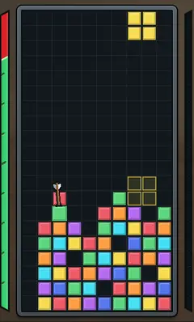

Unpaid Wages
Unpaid Wages is the first of The Warlord's Iron, given by  Brann.
Brann.
Objective
Kill the Warlord's crew during Pay the Crew.
When the Warlord throws his coin, his crew comes out. Hit him before they shoot and they run off. Do it three times.Brann
Requirements
- Finish the Greenshore Story.
- Reach level 45.
- Reach Bounty rank 3.
- It can be worked on before level 50, and is turned in at it.
Rewards
 Gold Coin ×2,000
Gold Coin ×2,000
6,985 experience.
Walkthrough
- Find Scrap Warlord:
- Sand Storm, in the Red Desert Story (fight 3 of the road)
- the Endless Dungeon's Sand Storm: a round boss; the warden its chest follows

Wait for Scrap Warlord's Pay The Crew. His crew shoot two bolts in under your surface. Clear a line while his coin is in the air and the crew dies for good.- Do it 3 times in all: Kill the Scrap Warlord's crew during Pay the Crew 3 times. Every answer counts, in any mode, over as many fights as it takes.
- Turn it in to Brann on the QUESTS screen.
Tips
- When Pay the Crew starts, the Scrap Warlord's coin goes up. Clear any line while it is in the air.
- A single is enough: what counts is landing it in time. Keep one row nearly full for it.
Changes
Not written yet
What changed in this quest, update by update.
| The Warlord's Iron | |
|---|---|
| Steps | Unpaid Wages · Still Air · Broken Horns · Forged Horns |
| Next | Still Air |